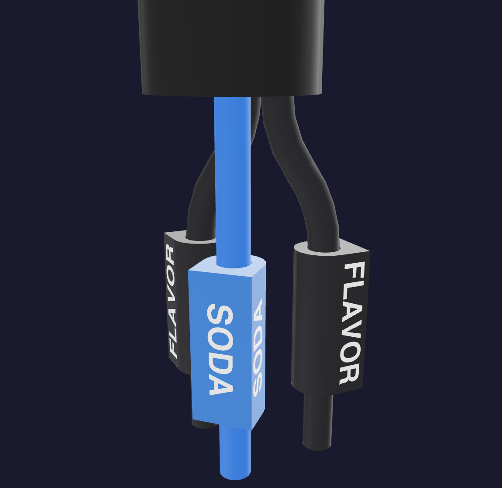
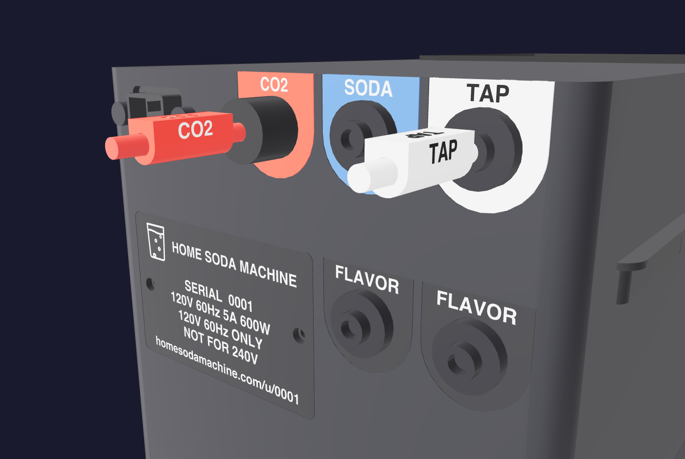

1
MOUNT THE FAUCET

1 3/8 in hole. Plate, washer and nut go on from below.
1 3/8 in hole. Plate, washer and nut go on from below.
Cold only. Use the tee that matches. Filter → white TAP port.
 ←→
60 MM BEHIND
←→
60 MM BEHIND
215 mm wide. Leave 60 mm behind and both side grilles clear.

12 IN / 300 MM LOOP
MATCH WORD + COLORBlue → SODA. Black → either FLAVOR. Push fully, then tug.
Secure upright. Fit the regulator, connect red to CO2, open slowly and leak-test.
Open water, open CO2, plug in. Continue when the screen says READY.